Module 7
Avoiding Distractions
Recent research by the National Highway Traffic Safety Administration (NHTSA) indicates that 90% of crashes in the United States result from driver error. In this module, we will explore how technology can create distractions while driving and discuss effective strategies to ensure your safety on the road.
Distracted Driving
Distractions stem from our emotional responses and our pursuit of fulfilling fundamental human needs. Unfortunately, driving while distracted can lead to catastrophic consequences. Now, let's watch a video that illustrates the risks associated with cell phone use while driving.
Click Play to begin the video.
Video Analysis and Statistics Summary
What was your impression of the video? Could the tragedy have been prevented? Disaster strikes even when we least expect it.
And yet, it happens more frequently than we'd like to think. As noted in a study by the NHTSA, the following driver error categories contributed to crashes in the United States:
- Driver inattention - 22.7%
- Vehicle speed - 18.7%
- Alcohol impairment - 18.2%
- Perceptual errors (looked, but didn't see) - 15.1%
- Decision errors (turned with obstructed view) - 10.1%
- Incapacitation (fell asleep) - 6.4%
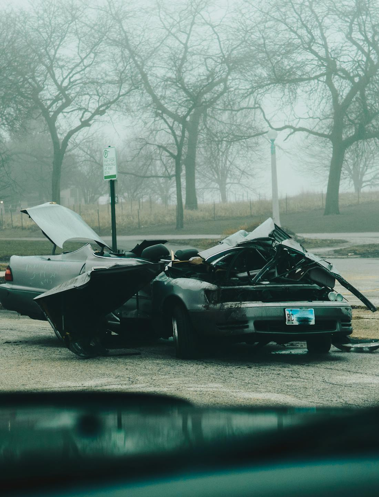
Click Play to begin the next video.
Mobile devices can significantly divert your attention while driving. Aside from cell phones, there are various other distractions you should be aware of:
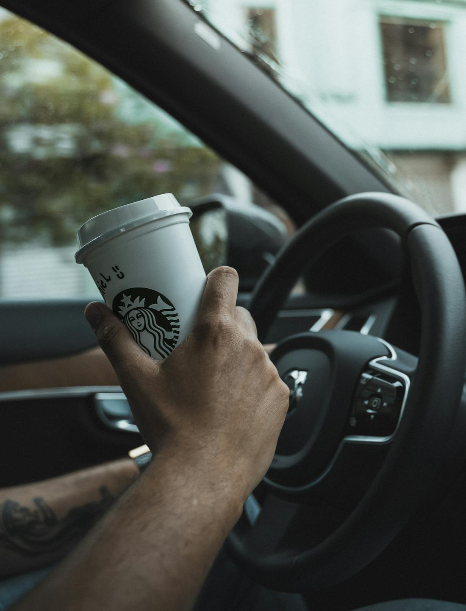
- Children.
- Advertising signs such as billboards and business signs.
- Eating or drinking.
- Personal grooming.
- Listening to music through the radio, streaming services, or CDs.
- Construction areas.
- Accidents on the road.
- Reading materials, and
- Using computers.
How Technology Influences Drivers
Mobile phones are a significant source of distraction for drivers today. It's crucial to avoid using your phone while driving to ensure safety. As with any technological advancement, cell phones offer both advantages and potential hazards. Recent studies have explored their risks, likening them to the impairments caused by alcohol.
Studies indicate that using a cell phone while driving increases the likelihood of an accident by approximately four times. The issue isn't merely the manual dexterity required to operate a phone; it primarily stems from the driver's lack of concentration on the road. Let's watch a video to delve deeper into this topic.
Click Play to start the video.
Would the accident in the video have been prevented if the driver wasn't texting and driving?
Other Sources of Distractions on the Road
Engaging in phone conversations while driving reduces brain activity related to driving by over 37%. Additionally, as demonstrated in the video, sending or reading a text message diverts your attention from the road for 4 to 5 seconds. Always ensure that you complete any calls or texts before getting behind the wheel.
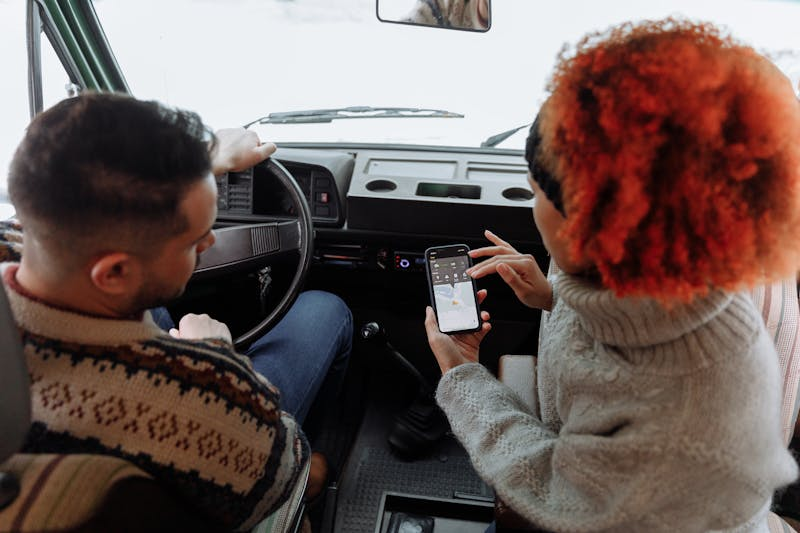
Talking with friends:
Click on image to learn more...
When driving, it's perfectly acceptable to ask your friends to be quiet.
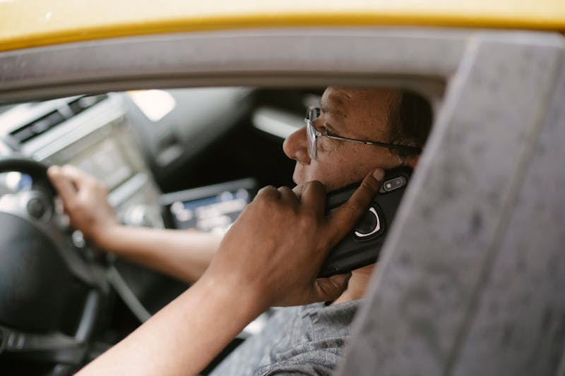
Using Your Cell Phone:
Click on image to learn more...
It's best to save phone calls for later, ideally when you are parked or outside the vehicle.
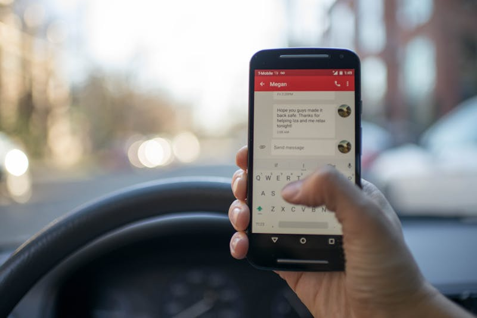
Texting While Driving:
Click on image to learn more...
Do not text while you are driving.
Always keep both hands on the wheel and wait until you are parked to write a text message.
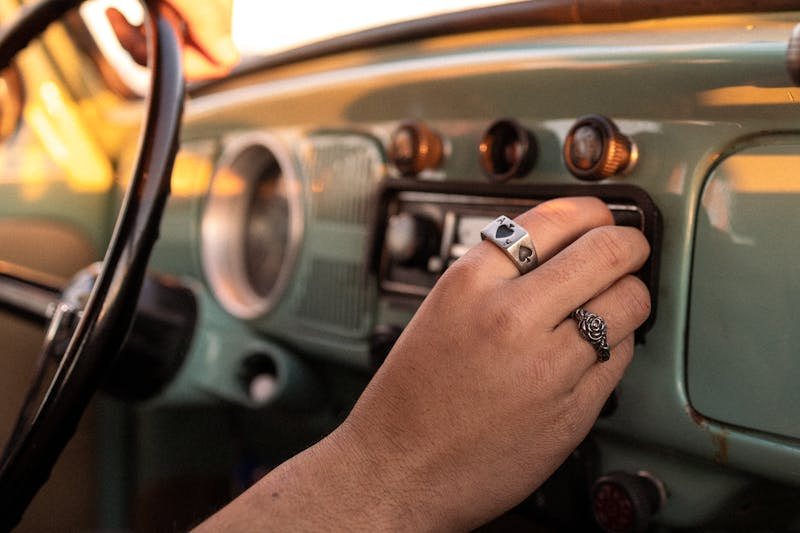
Adjusting Music Settings:
Click on image to learn more...
Accidents can occur in the blink of an eye.
Suggestion: Save your favorite radio stations or create a personalized playlist on your iPhone beforehand.
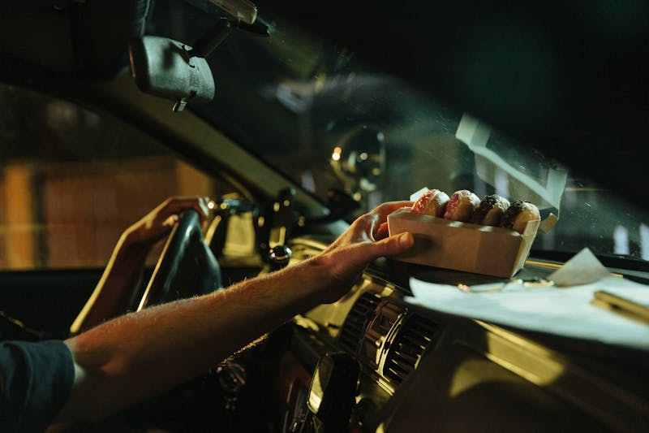
Eating:
Click on image to learn more...
Instead of balancing your drink with your fries and burger, wait until you're parked to enjoy your meal.
Key point: Focusing on your food rather than the road can significantly reduce your attention to driving.
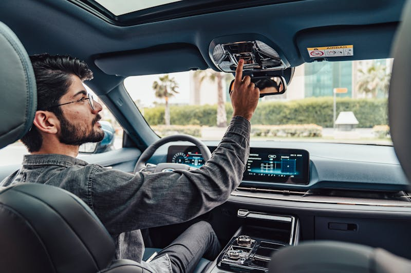
Tweaking the controls:
Click on image to learn more...
Spending too much time adjusting the controls can lead to dangerous situations.
Advice: Set up controls such as the air conditioning, heat, and radio volume before driving to avoid distractions.
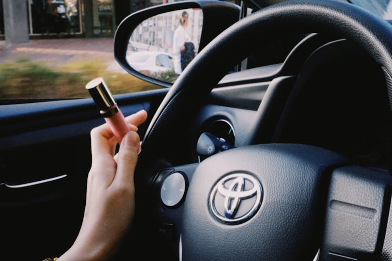
Grooming:
Click on image to learn more...
Engaging in grooming while driving can lead to expensive lessons on distraction.
Consider this: Why not wait until you arrive to freshen up?
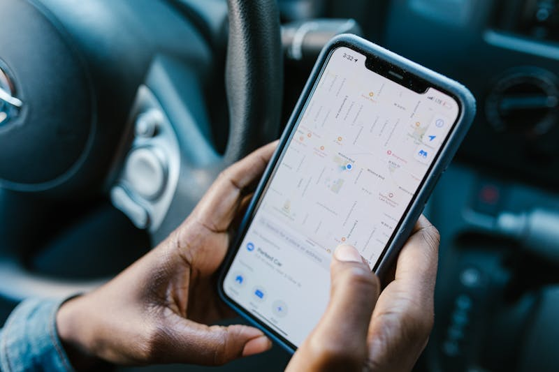
GPS or Maps:
Click on image to learn more...
Avoid reading maps or directions with one hand on the wheel while driving.
Tip 1: Plan your route BEFORE you get in the car.
Tip 2: Utilize Google Maps for turn-by-turn navigation to your destination.
The safest option is to avoid using a cell phone while driving. Let's share some valuable tips on managing phone calls while on the road:
- Allow voicemail to handle your calls, and return them at a later time.
- Pull off the road to a safe area and turn off your engine, or ask a passenger to make or take a call.
- Use a hands-free system and voice-activated dialing while driving where allowed by law.
- Do not engage in stressful or emotional conversations while driving.
- Never take notes or look up numbers while driving.
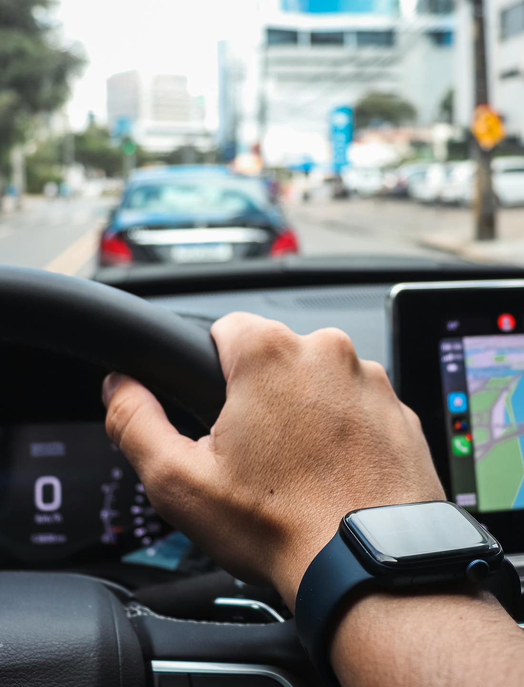
Press Play to start the video.
As seen in the video, distractions are an obstacle to safe driving. In your driving experience, what distracts you the most?
Identify the distraction: Click on the image that illustrates a driving distraction.
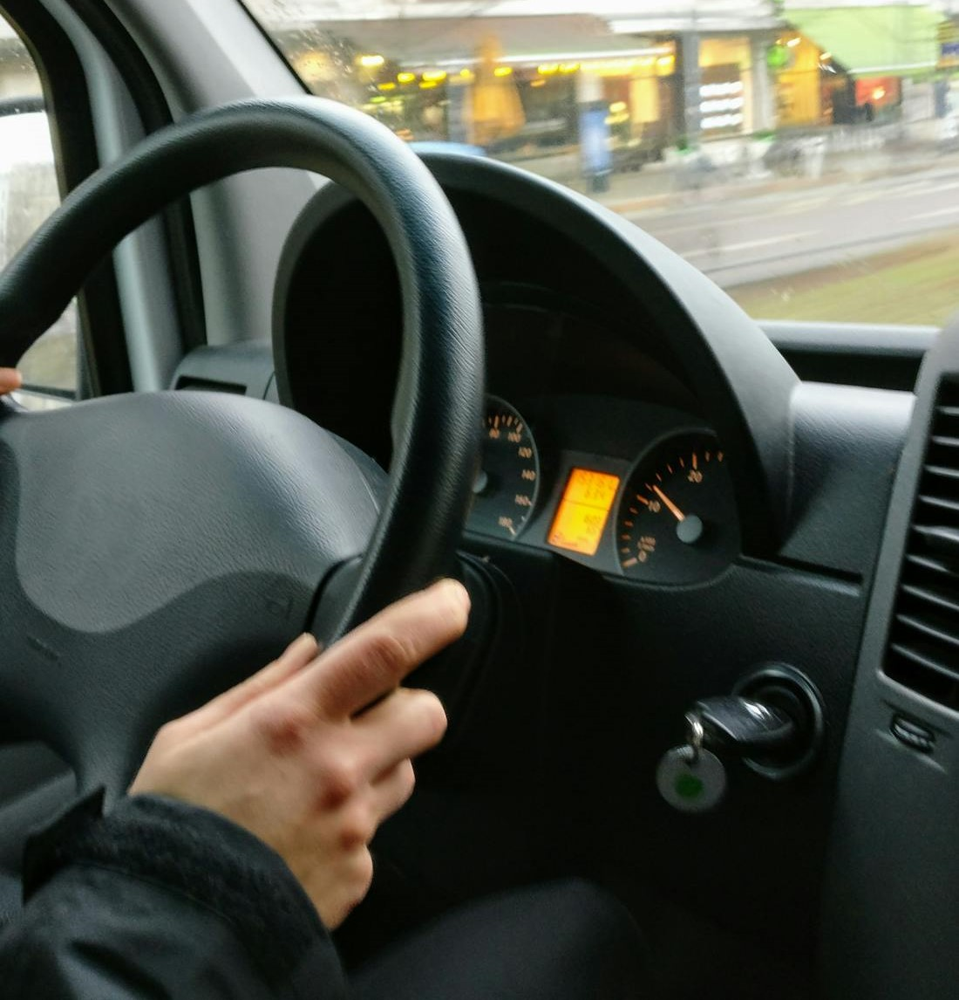
Traffic Infractions Cost Money
Take a moment to consider the total amount of money you have invested since obtaining your driver's license to maintain your legal driving privilege. How much have you spent on:
- Traffic fines.
- Legal fees.
- Increased insurance premiums.
- Cost of driving courses.
- Out-of-pocket costs for damage not covered by insurance.
- Lost earnings due to license suspension or revocation.
Press Play to start the video.
Lesson Takeaways

You now possess a robust comprehension of the risks associated with distracted driving and the steps you can take to enhance your safety on the road. Even though it may seem superficial at first, distractions are a reason why collisions continue to be a risk on the road. To be safe, always stay focused on the task of driving.
Take a moment to consider the insights you've gained today and reflect on these questions:
- Where do you keep your technology while driving?
- Is your computer currently powered on or off?
- Have you set your cell phone to silent or vibrate mode?
Think about one change you could implement today to mitigate technology distractions while driving.